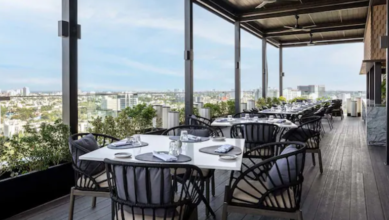
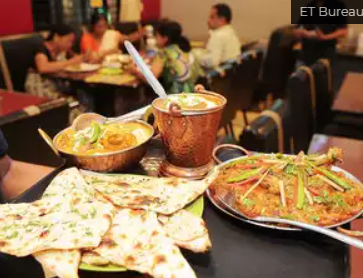

<body style="background-color: palegreen;">
    <div class="container">
        <div class="row">
            <div class="col-6">
                <h2 style="text-align: center;">About us</h2>
                <hr>
                <p>At Homestyle kitchen, we blend culinary innovation with timeless traditions. Our passion for food is matched only by our commitment <br> to providing an unforgettable dining experience. From the moment you step through our doors, you are welcomed into an atmosphere <br> of warmth, elegance, and a celebration of flavors that delight the senses.</p>
                <center>
                    
                    
                </center> 
                <h4>Chef's profile</h4>
                <p>Meet our head chef,Mr.Karthik, whose culinary journey has taken him from renowned kitchens in Paris and New York to <br> creating masterpieces in our kitchen. With a deep love for Indian flavors or modern fusion, Chef Karthik combines classic techniques with <br> contemporary twists to bring you dishes that are both innovative and comforting. His philosophy centers around seasonal ingredients, sustainable practices, and a passion for excellence.</p>
                <h4>Our philosophy</h4>
                <p>We believe in sourcing the freshest ingredients locally and preparing them with a touch of creativity and love. Our commitment to <br> sustainability and community is reflected in every aspect of our restaurant, from our partnerships with local farmers to our environmentally conscious practices. <br>
                   Locally Sourced: We take pride in working with local farmers and artisans to bring you the best and freshest ingredients. This not <br> only supports our community but also ensures that our dishes are of the highest quality <br>
                   Sustainability: Our commitment to the environment includes [specific practices, e.g., "composting food waste, reducing plastic <br> use, and supporting sustainable fishing practices"].
                   Creativity and Passion: Each dish is a labor of love, infused with creativity and a passion for culinary excellence. <br> Our menu evolves with the seasons, offering new and exciting flavors throughout the year.</p>
            </div>
        </div>
    </div>
</body>